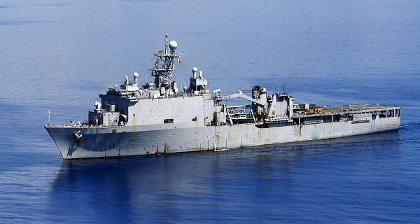
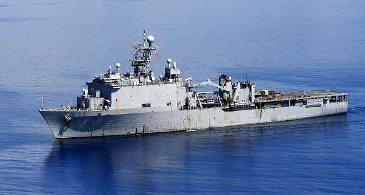
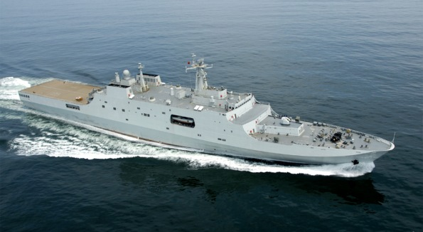
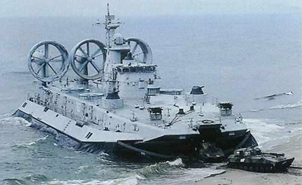
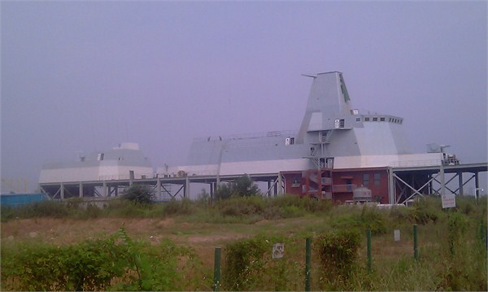

【海军】中共海军的两栖攻撃舰
2014-09-03 13:40:00
原文网址：https://blog.udn.com/MengyuanWang/108908630
这个礼拜最重要的小道消息有关中共海军的新型两栖攻撃舰。两栖攻撃舰依美军的编号，分为三类：全通甲板，像艘小航空母舰的叫LHA（Landing Helicopter Assault，1970年代给第一代的Tarawa Class的称号）或LHD（Landing Helicopter Dock，80年代给Wasp Class黄蜂级的称号，以便和LPD和LSD协调一致；但是最新的America Class美国级又改回LHA；我猜是因为取消了船坞，不好意思再叫Dock）。非全通甲板，亦即在舰身后半有一个停机坪，还有机库的，叫做LPD（Landing Platform Dock，又称之为Amphibious Transport Dock，两栖运输母舰）；美军正在用25000吨的San Antonio Class来替换16900吨的Austin Class。只有停机坪，而没有机库的，叫做LSD（Landing Ship Dock）；美军目前有16100吨的Whidbey Island Class和16700吨的Harper's Ferry Class两种，后者是前者的小改型。
America Class的第二艘USS Tripoli（LHA-7）的想像图。第一艘USS America（LHA-6）于2012年下水，将于今年年底前服役。因为F-35B机库占地比原本预期的大，不得不取消了船坞。计划自第三艘起，变更设计，加回船坞。 USS San Antonio（LPD-17），2006年服役。和071级相比，吨位虽大，引擎反而稍弱，装载能力也较逊色；真正的亮点在于其有利于隐身的共形天线（Conformal Antenna Array）。USS Fort McHenry（LSD-43），Whidbey Island Class的第三艘。Whidbey Island Class的八艘船是美国海军现役序列中唯一能带四艘LCAC的军舰。
USS San Antonio（LPD-17），2006年服役。和071级相比，吨位虽大，引擎反而稍弱，装载能力也较逊色；真正的亮点在于其有利于隐身的共形天线（Conformal Antenna Array）。USS Fort McHenry（LSD-43），Whidbey Island Class的第三艘。Whidbey Island Class的八艘船是美国海军现役序列中唯一能带四艘LCAC的军舰。
目前共军序列里的两栖攻撃舰只有三艘071级LPD，即2006年下水的崑崙山号，2010年下水的井冈山号，和2011年下水的长白山号。071级满载排水量18500公吨（请注意，1公吨=1.102吨，所以18500公吨=20400吨），可携带800名陆战队员，不过一般载员略少以腾出空间来搭载各型机械化作战车辆。
071级LPD。舰身已经过隐身处理，只差没有共形天线。
071级的标准搭配包括四艘726型玉义级气垫登陆艇。这些中型气垫登陆艇的尺寸，性能和战术运用都与美军的LCAC（Landing Craft Air Cushion）极为相似；不过由于开发时间晚了20年，得以採用新的电子科技和人性化设计，所以精确来说，726型基本上是中共版的LCAC 2.0，亦即计划在2017年服役的SSC（Ship-to-Shore Connector），比现役的LCAC SLEP（Service Life Extension Program）版稍微先进一些。在战术运用上，中型气垫登陆艇主要用于运送登陆部队从两栖攻撃舰渡海上岸，所以其载重一般在70吨左右，以便一次载运一辆没有自行泅渡能力的主战坦克（Main Battle Tank）和一至两个排的伴随步兵。071级在设计上是用来运送以一个陆战营为核心的多兵种合成战斗群（美军的叫做ARG，Amphibious Ready Group）；它的四艘登陆艇配合直升机可以在第一波次就把这个战斗群的第一线兵力全部送上敌岸。三艘071级加起来刚好可以搭配一个加强陆战旅，足以满足中型的两栖作战需要。
美军现役的SLEP版LCAC。图中携带了一辆M1坦克，已经是满载了。 726型气垫登陆艇，和LCAC的设计理念基本一致。不过从图中可以看出其每边的传动轴有两个大型变速器，因此726型的油耗可能低于LCAC，有助于增加航程。
726型气垫登陆艇，和LCAC的设计理念基本一致。不过从图中可以看出其每边的传动轴有两个大型变速器，因此726型的油耗可能低于LCAC，有助于增加航程。
提起气垫登陆艇，读者也许联想到中共刚从乌克兰买到的欧洲野牛级（Zubr Class）大型气垫船。Zubr比LCAC大三倍，可以一次运载三辆主战坦克和140名步兵，航速更高达65节，的确很适合横渡台湾海峡之类的岸至岸两栖作战。但是国军在今年六月的汉光演习兵旗推演里假设共军将用Zubr做为登陆先锋，直接突撃嘉南平原的沙滩，那就真是用外行话来哄骗外行人了。最好笑的是假设共军会在嘉南平原登陆，那里根本没有任何有价值的目标；而且气垫艇的主要优点就在于不需要沙滩也能登陆。此外气垫登陆艇是很脆弱的装备，运送第一攻撃波时极易受到守军地面炮火或武装直升机的打撃而损毁（汉光演习就安排AH-64来炸射Zubr），所以LCAC和726型基本上是半消耗品，单价不能太高。Zubr不但太贵，不值得浪费在这种危険的任务上，而且它有一个更重要的任务，就是等第一攻撃波的两栖部队经过一整个白天的血战，已经建立了稳定的滩头阵地之后，在第一夜里快速有效地将后续的重装部队送过海峡，完全省去占领港口的需要。我个人的计算是共军只需要20艘Zubr，就能在一夜之间把一个完整的重装集团军的第一线作战装备和兵员全部运送到台湾，而一个共军重装集团军的战力是超过整个国军陆军的总和的（不算武装直升机，因为没有空优的话，直升机只是敌方战斗机的靶）。不过共军仍然保有20多艘072A级坦克登陆舰和新式的人工港口，所以也可以进行诺曼第式的登陆战。共军的武器发展方针一向是“两条腿走路”，同时发展两种不同的登陆战能力并不意外。
Zubr Class。大约为LCAC的两倍长，两倍寛，三倍重。Zubr不是登陆艇，而是运输舰。
新出来的小道消息是中共海军刚刚签了约，订购了若干071A级LPD和型号未知的LHA。依据共军的军舰命名传统，071A级应该沿用071的船身，所以排水量变化不会很大。LPD主要的任务是运输，其舰载武器是很简单的，就算再怎么换新也没有多大的意义。当然LPD是一个两栖攻撃群的核心，必须有很强的C4ISR（Command，Control，Communications，Computers，Intelligence，Surveillance，Reconnaissance）能力；而在过去这一年里，共军进行了多次两栖攻撃演习，071级的指挥能力颇获好评，显然其C4ISR系统已经甚为先进，即使再有改进，也只是量变而不是质变，最有可能是学San Antonio Class改用共形天线（055级已经用上了，所以共军显然是有这个技术能力的）。因此综合来看，我个人认为071A级和现役的071相比，更动幅度并不大。目前的消息是071A会在2015年上船台，应该在2016年下水。考虑共军的两栖旅有三个陆战营，071A的数量应该是三的倍数，可能是三艘，也可能是六艘。
2014年九月武汉船舶研究所建的055模型，用来测试各型天线之间的兼容性；这是共形天线第一次出现在共军序列。
至于新的LHA，目前的消息是其排水量为36000公吨，2016年上船台。中共并没有像美军F-35B那様的STOVL（Short Take-Off Vertical Landing，短场起飞垂直降落）战斗机，而STOVL需要的设备是很多的，America Class的头两艘甚至因此而完全没地方放LCAC。所以共军的LHA虽然比45000公吨的America Class小了一号，除了战斗机以外，其他的功能反而会更齐全。LHA和LPD相比，主要的功能差异在于能多带很多架武装直升机。如果守军实力较强，LHA的强大空中火力要比LPD稳当得多。36000公吨的身材，是世界最大的纯直升机LHA了。俄国向法国买的西北风级（Mistral Class）排水量只有21000公吨，相比之下，中共要建立世界级海军的雄心壮志是很明显的。
Mistral Class，只有21000公吨，俄国却也无法自建了。失去乌克兰对俄国的军事工业打撃很大，尤其是苏联的水面舰只基本上都是在乌克兰建的（包括Zubr和辽寧号的前身Varyag），以致俄国在苏联解体之后所建的最大水面舰艇只是一型护卫舰。
LHA和LPD都是在远洋投射营级或旅级兵力的工具，和台海没有关系，倒是很适合用于南海争端之中。不过这些新的武器并不代表着共军即将在南海动手；中国自古讲究不战而屈人之兵，而强大的军力是屈人的最佳手段。美国已经有数十年没有进行过旅级以上的两栖登陆作战，但是至今仍然保持有三十多艘两栖攻撃舰（LHA*1，LHD*8，LPD*10，LSD*12，总数31，目标是33）。此外两栖攻撃舰特别适合救灾之类的人道主义援救任务。中共的国际地位日益提高，远洋救灾是超级大国必须有的能力。